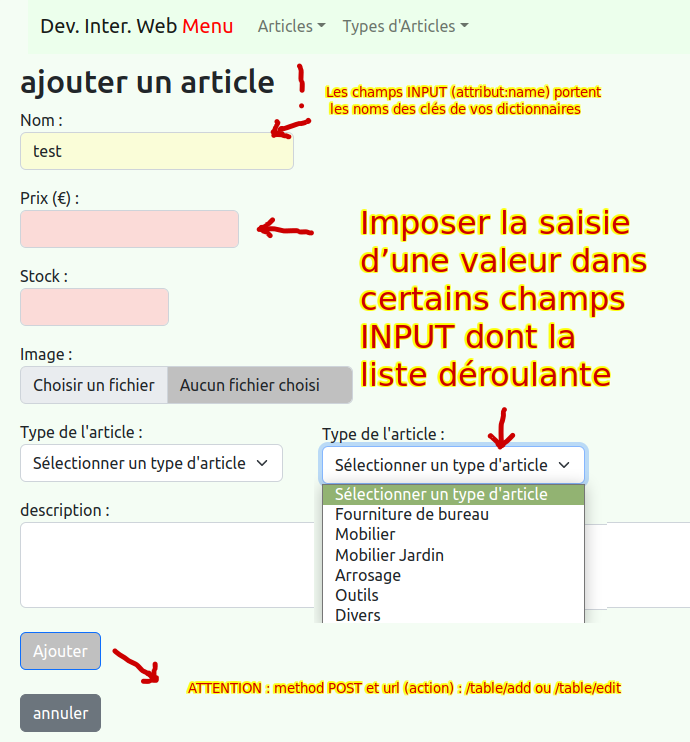

Il faut terminer la version minimum du tp précédent avant de commencer le projet
Faire les mêmes interfaces que lors des tps précédents mais en utilisant les 2 tableaux de données de votre sujet
Le projet est à rendre sur moodle (utiliser le lien suivant), clé d’inscription: R105 pour le samedi 4 novembre
Soigner l’ergonomie des interfaces
Faire attention que les contenus des pages affichées soient valides sur W3C
Respecter les consignes suivantes (surtout typographique) :
les noms des fonctions (méthodes) dans l’application doivent porter le nom de la table (utilise du snake_case)
les routes doivent porter le nom de la table puis le nom de l’opération ( en kebab-case ou spinal case) : /table/show /table/edit /table/add …
créer dans le dossier template un dossier de vue qui porte le nom de la table (utilise du snake_case)
mettre aux fichiers des vues des noms de la forme (add_table.html edit_table.html show_table.html)
les noms des champs input(name) doivent porter le nom des clés (attribut) des dictionnaires que vous utilisez
le contenu des dictionnaires n’est pas modifié
toutes les valeurs du formulaire des champs INPUT doivent être affichées dans le messages “flash” lors de la soumission du formulaire
Remplacer table par les 2 noms des tables de votre sujet
Volontairement, il n’y a pas de “design”, cependant voici une démonstration des fonctionnalités du travail attendu http://amillet1.pythonanywhere.com/
ATTENTION : on ne doit pas retrouver le mot article dans votre code
L’affichage des 2 tableaux “python” doit être sous forme de tableaux pour afficher/ajouter/supprimer/modifier (CRUD back-office)
Les 2 tableaux python ne sont jamais modifiés
Les noms des champs INPUT dans les formulaires doivent porter le nom des clés des tableaux python
Lors de la modification d’un enregistrement, afficher le contenu de l’enregistrement (la ligne sélectionnée) dans les champs INPUT du formulaire.
/table/show et table2/showcréer 2 formulaires (un pour ajouter un enregistrement sur la route /table/add et un pour pour modifier un enregistrement sur la route /table/edit) pour chaque table
attention : les noms des champs input(name) doivent porter le nom des clés (attribut) des dictionnaires
ergonomie : imposer de sélectionner une valeur dans la liste déroulante, imposer de saisir un contenu dans au moins 2 des principaux champs (attributs) du dictionnaire
utiliser pour valider le formulaire la méthode POST et une route (attribut “action” du formulaire) de nom /table/add ou /table/edit selon l’opération

afficher les 2 contenus des 2 tables dans la même vue
Formulaire :
afficher les éléments de la première table sous forme de cards
Le filtre n’est pas fonctionnel. Seul l’affichage du contenu des 2 tableaux (python) est à réaliser, ainsi que l’affichage du contenu du formulaire dans des messages “flash”. Tester sur http://amillet1.pythonanywhere.com/article/filtre
Exemple de code pour afficher le contenu du filtre
Pour comparer des réels c’est un peu plus compliqué
script de test du projet :
Un premier script extrait les archives .tar.gz et .zip, ce script recherche un dossier et copie un autre script test_projet.sh dans le dossier, le script se trouve au même niveau que le fichier app.py (une erreur est signalée dans le cas contraire).
script de test :
#!/bin/bash
clear
echo -e "\033[0;32m \n**** listes des fichiers :"
ls templates/*
echo -e "\033[0;31m \n*****.sql \033[0m"
grep "@app.route" app.py
echo -e "\033[0;32m \n**** listes des paramètres (clés des tableaux associatifs) :"
grep "request.form.get" app.py | uniq -c
echo -e " \033[0m"
code app.py &
killall python3
flask --debug --app app run --host 0.0.0.0